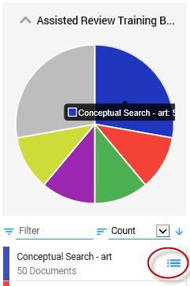
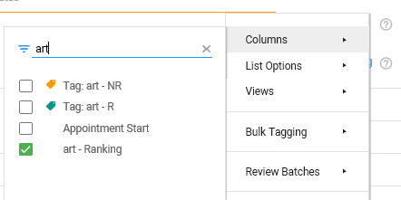
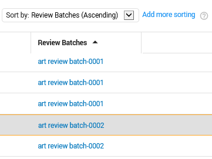

On the Home page, select Browse:

In Facet View, select the initial training set that has been created.

Add the ranking field for the Training Batch.

Sort on the ranking field with the highest ranking on top.

Now, based on this sorting order, create Review Batches.

Divide the sub-batches over all reviewers (add the Review Batches field to sort on the different sub-batches).
